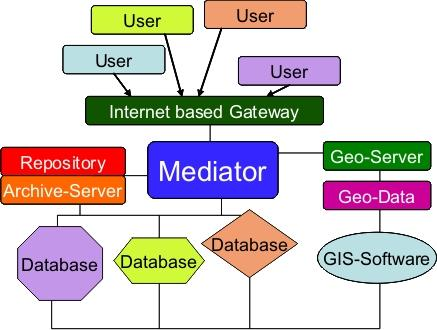

ArcheoInf – Informationszentrum für die Archäologie
Etwas (Vor-)Geschichte zu ArcheoInf
- 2004 Ausschreibung der DFG: Leistungszentrum für Forschungsinformation
- 31.1.2005 Abgabe einer Projektskizze für ArcheoInf
- 1.10.2005 Beginn der ersten Projektphase (6 Monate)
- 19.12.05 Workshop mit Teilnehmern aus Berlin, Tübingen, Marburg, München, Köln, Frankfurt
- 28.2.2006 Antragstellung
- 24.4.2006 Präsentation vor der Gutachterkommission in München (TU)
- Mai 2006 Aufforderung seitens der DFG zur Überarbeitung und Wiedereinreichung des Antrags
- Dezember 2006 Wiedereinreichung des überarbeiteten Antrags
- August 2007 Bewilligung
- 15.1.2008 Kick off – Treffen für ArcheoInf
Was will ArcheoInf?
ArcheoInf macht Primärdaten archäologischer Forschung, die bisher in heterogenen Datenstrukturen vorgehalten wurden, unter Wahrung ihrer Autonomie in einer gemeinsamen Umgebung web-basiert verfügbar.
Mit den archäologischen Primärdaten werden bibliothekarische Informationen und Dienstleistungen sowie geoinformatisches Datenmaterial verbunden.
Auf diese Weise entsteht ein umfassender Datenpool zur archäologischen Forschung, der den Datenbestand dezentral oder zentral auf Dokumentenrepositorium, Archiv- und Geo-Server nachhaltig verfügbar macht.

ArcheoInf fühlt sich dem Open Access-Gedanken gemäß der Berliner Erklärung über offenen Zugang zu wissenschaftlichem Wissen vom 22. Oktober 2003 verpflichtet.
Bisherige Arbeiten
Seit dem Projektbeginn am 15. Januar 2008 werden Datenbanken von verschiedenen Partnerprojekten von den Informatikern der Technischen Universität Dortmund analysiert und für die Einspielung in ArcheoInf vorbereitet. Bis zum heutigen Zeitpunkt stehen ArcheoInf Datenbanken und Geoinformationen folgender Projekte zur Verfügung
- Plaghia-Survey (Prof. F. Lang, TU Darmstadt)
- Gela-Survey (RUB)
- Cossyra-Survey (dott. Almonte: Rom-Tübingen)
- Lykien-Survey (Prof. Kolb, Tübingen)
Gleichzeitig werden neue Projekte bei der Erstellung von IT-Lösungen unterstützt:
- Zisternenprojekt (BMBF, F. Schön, Tübingen)
- Agrigent-Hinterland-Survey (RUB)
- Angebot an Miletgrabung (RUB, von Graeve-Nachfolge)
Neben der Analyse der Datenbanken steht die Erstellung eines ersten Prototypen des Mediators im Vordergrund der softwaretechnischen Arbeiten der Dortmunder Kollegen.
Fächerübergreifend wurde eine komplexe Ontologie erstellt, welche es dem Mediator erlaubt, archäologisches Fachwissen zu verstehen und zu interpretieren. Diese Ontologie basiert auf einer für den archäologischen Bereich erstellten Umformung und Erweiterung des CIDOC CRM-Modells durch die englische Denkmalbehörde English Heritage. Das Modell wird nach den Maßgaben von ArcheoInf angepasst. Das Rahmenwerk der archäologischen Fachterminologie wird von den beteiligten Archäologen durch die Erstellung umfangreicher Thesauri geschaffen.
Die Geoinformatiker der Hochschule Bochum haben sich mit der Analyse von CAD/GIS-Anwendungen der Projekte sowie dem Aufsetzen eines Geo-Servers auseinandergesetzt. Zudem wurde ein WebGis erstellt, welches mit dem Mediator verbunden ist und Geoinformationen für den Nutzer zugänglich machen soll. Ein weiterer Schwerpunkt der Geoinformatik liegt in der Erstellung automatisierter Transformationsalgorythmen für diverse Kartendaten.
Die beteiligten Mitarbeiter der Universitätsbibliotheken in Bochum und Dortmund beschäftigen sich mit einem Dokumentenrepositorium und dessen Anbindung an den Mediator. Mögliche Kooperationspartner für dieses Teilprojekt sind Propyläum, die Max Planck Digital Library sowie Fasti-online.
„Marketing“
In den vergangenen Monaten wurde von den Mitarbeitern von ArcheoInf ein reges Marketing durch die Teilnahmen an Kongressen mit Vorträgen und Postern betrieben. Bei folgenden Kongressen und Tagungen war ArcheoInf durch einen eigenen Beitrag vertreten:
- AG Thesaurus, Helmsmuseum Hamburg
- InetBib (Würzburg)
- Jahrestagung der deutschen Archäologenverbände (Mannheim)
- Gesellschaft für Klassifikation (Hamburg)
- Internationaler Kongreß für Klassische Archäologie (Rom)
- Internationale Geodätentagung (Obergurgl)
- FIEC (Berlin, Beitrag für den August 2009 bereits angemeldet)
Weiteres Vorgehen und Perspektiven
- Perspektive I: Arbeitsprogramm bis Ende 2009
Januar 2009: Berichte aus den Arbeitsgruppen
Februar 2009: Analyse des Sachstands und Folgerungen für die zweite Projektphase
März 2009 Aufgabenverteilung für die Abfassung des Fortsetzungsantrags
April 2009 Einreichung des Fortsetzungsantrags
Dezember 2009 Fertigstellung des Prototyps
15. 1. 2010 voraussichtlich Beginn der zweiten ProjektphaseWeitere Schwerpunkte der Arbeiten im kommenden Jahr werden Absprachen mit Kooperationspartner für das Dokumentenrepositorium, die weitere Optimierung von Partnerdatenbanken sowie die Gewinnung neuer Partnerprojekte sein. Die Zusammenarbeit mit dem DAI soll weiterhin gesucht und verstetigt werden. Die Mitarbeiter von ArcheoInf präsentieren das Projekt auf Kongressen und Tagungen, um eine Breite Basis der Akzeptanz zu legen. Zudem soll die Beteiligung von ArcheoInf am einem von der DFG geplanten Kompetenzzentrum IT für die Altertumswissenschaften ausgelotet werden. Auch hierzu wird der Dialog mit dem DAI gesucht.
- Perspektive II: Aspekte für die zweite Antragsphase (2010-2012)
Primäres Ziel für die zweite Antragsphase ist die Validierung und der vollständiger Ausbau des Prototyps. Zudem soll das Angebot von ArcheoInf neben der Klassischen Archäologie auch andere Disziplinen der Archäologie wie die Prähistorie, die Vorderasiatische Archäologie oder die Bauforschung umfassen. Des Weiteren ist der Thesaurus auch auf andere Sprachen auszuweiten, zu Denken hierbei wäre hierbei vor allem an Englisch und Italienisch.
Die Bibliotheken werden einen Archivserver in Betrieb nehmen, welcher die langfristige Datenhaltung durch ArcheoInf gewährleistet. Nach einem Funktionstest und einer folgenden Optimierung wird ArcheoInf spätestens Ende 2012 seinen Dienst aufnehmen.